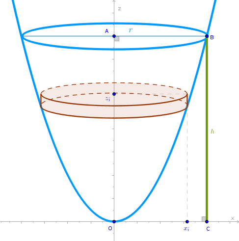

Circular Paraboloid
Problem
Find the volume of a circular paraboloid formed by revolving a \(z = ax^2\) parabola around the \(z\) axis.
Either the height of the paraboloid along the \(z\) axis \(BC = AO = h\) or the corresponding value along the \(x\) axis \(AB = OC = r\) is given, see the drawing.
Solution
Choose thin right circular cylinders as primitive parts to approximate the volume of the circular paraboloid and position them as shown:
Cut \(AO = h\) into \(n\) line segments of equal length:
$$z_{i-1}z_i = \Delta z = \frac {h}{n}$$The volume of the \(i-\)th primitive cylinder then is:
$$V'_i = \pi x_i^2 \frac {h}{n} =$$ $$\frac {\pi h}{n} \frac {z_i}{a} =$$ $$\frac {\pi h}{n} \frac {h}{an} i =$$ $$\frac {\pi h^2}{an^2} i$$where we have used the following facts:
$$z_i = ax_i^2 = \frac {h}{n} \times i$$Then:
$$V' = \sum_{i=1}^n V'_i =$$ $$\sum_{i=1}^n \frac {\pi h^2}{an^2} i =$$ $$\frac {\pi h^2}{an^2} \sum_{i=1}^n i =$$ $$\frac {\pi h^2}{an^2} \frac {n(n + 1)}{2} =$$ $$\frac {\pi h^2}{an^2} \frac {n^2(1 + \frac {1}{n})}{2} =$$ $$\frac {\pi h^2}{2a}\Big(1 + \frac {1}{n}\Big)$$Apply the limit to \(V'\) as \(n \to +\infty\):
$$V = \lim_{n \to +\infty} \frac {\pi h^2}{2a}\Big(1 + \frac {1}{n} \Big) =$$ $$\frac {\pi h^2}{2a} \lim_{n \to +\infty}\Big(1 + \frac {1}{n}\Big) =$$ $$\frac {\pi h^2}{2a}$$Considering the fact that from \(x = r\) it follows that \(h = ar^2\) we obtain a remarkable result known to Archimedes:
$$\bbox[#e8e8e8,3pt]{V = \frac {\pi r^2 h}{2} = \frac {\pi h^2}{2a} = \frac {\pi a r^4}{2}}$$which may be interpreted as follows:
the volume of a circular paraboloid is exactly one half of the volume of the corresponding right circular cylinder
Will the above rule hold for elliptic paraboloids?
Elliptic Paraboloid
is a quadratic surface with the following canonical equation in the Cartesian coordinate system:
$$\begin{equation} \frac {x^2}{a^2} + \frac {y^2}{b^2} = \frac {z}{c} \end{equation}$$We choose thin right elliptic cylinders as primitive parts to model the volume of an elliptic paraboloid.
The volume of the \(i-\)th primitive cylinder is:
$$V'_i = \pi x_i \times y_i \times \frac {h}{n}$$where \(h\) is the height of the elliptic paraboloid obtained by cutting the paraboloid with a plane through \(A\) perpendicular to \(Oz\), see the drawing above.
Since in the \(zx\) plane \(y = 0\), the canonical equation (1) becomes:
$$\frac {x_i^2}{a^2} = \frac {z_i}{c}$$ $$x_i = a \sqrt{\frac {z_i}{c}}$$In the \(zy\) plane \(x = 0\) and (1) becomes:
$$\frac {y_i^2}{b^2} = \frac {z_i}{c}$$ $$y_i = b \sqrt{\frac {z_i}{c}}$$Consequently:
$$V'_i = \pi a \sqrt{\frac {z_i}{c}} \times b \sqrt{\frac {z_i}{c}} \times \frac {h}{n} =$$ $$\frac {\pi abh}{cn} z_i =$$ $$\frac {\pi abh^2}{cn^2} i$$An approximate volume of the elliptic paraboloid then is:
$$V' = \sum_{i=1}^n V'_i =$$ $$\sum_{i=1}^n \frac {\pi abh^2}{cn^2} i =$$ $$\frac {\pi abh^2}{cn^2} \sum_{i=1}^n i =$$ $$\frac {\pi abh^2}{cn^2} \frac {n(n + 1)}{2} =$$ $$\frac {\pi abh^2}{ch^2} \frac {n^2(1 + \frac {1}{n})}{2} =$$ $$\frac {\pi abh^2}{2c}\Big(1 + \frac {1}{n}\Big)$$Applying the corresponding limit to \(V'\) we obtain:
$$V = \lim_{n \to +\infty} \frac {\pi abh^2}{2c}\Big(1 + \frac {1}{n}\Big) =$$ $$\frac {\pi abh^2}{2c} \lim_{n \to +\infty}\Big(1 + \frac {1}{n}\Big)$$ $$\bbox[#e8e8e8,3pt]{V = \frac {\pi abh^2}{2c}}$$A right elliptic cylinder that contains the above elliptic paraboloid of the height \(h\) will have the following semi-major and semi-minor axis (when \(z = h\)):
$$x_h = a \sqrt {\frac {h}{c}}$$ $$y_h = b \sqrt {\frac {h}{c}}$$and it will have the following volume which we have deduced in Cylinders chapter:
$$\pi x_h \times y_h \times h =$$ $$\pi a \sqrt {\frac {h}{c}} \times b \sqrt {\frac {h}{c}} \times h =$$ $$\frac {\pi abh^2}{c}$$which means that the previously discovered rule for a circular paraboloid holds for an elliptic paraboloid also:
the volume of an elliptic paraboloid is exactly one half of the volume of the corresponding right elliptic cylinder
\(\blacksquare\)